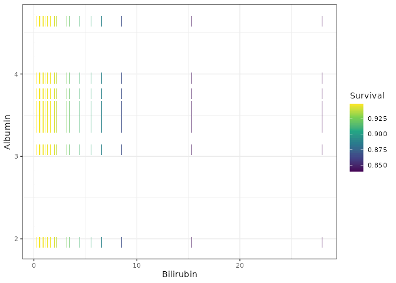
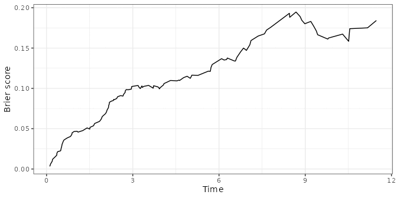
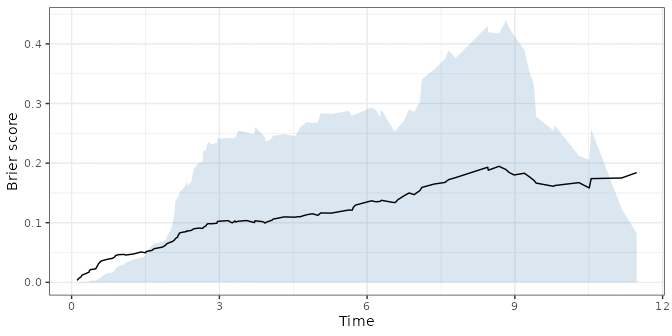
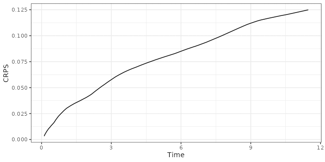

library(ggplot2)
library(dplyr)
library(tidyr)
library(randomForestSRC)
library(survival)
if (requireNamespace("ggRandomForests", quietly = TRUE)) {
library(ggRandomForests)
} else if (requireNamespace("pkgload", quietly = TRUE)) {
pkgload::load_all(export_all = FALSE, helpers = FALSE, attach_testthat = FALSE)
} else {
stop("Install ggRandomForests (or pkgload for dev builds) to render this vignette.")
}
theme_set(theme_bw())
# Plotting constants
event_marks <- c(1, 4)
event_labels <- c("Censored", "Death")
event_colors <- c("steelblue", "firebrick")Random Forest Survival Analysis with ggRandomForests
2026-07-17
Source:vignettes/ggRandomForests-survival.qmd
Work in progress
This vignette is under active development. Code examples and narrative may change before the next release.
Introduction
Random forests (Breiman 2001) are a non-parametric ensemble method that requires no distributional assumptions on the relation between covariates and the response. Random survival forests (RSF) (Ishwaran et al. 2008; Ishwaran and Kogalur 2007) extend the method to right-censored, time-to-event data by growing trees with a log-rank splitting rule and aggregating Kaplan–Meier estimates within terminal nodes.
The forest returns three ensemble quantities for each subject. First, the survival function : the probability of surviving past time , bounded between 0 and 1. Second, the cumulative hazard function (CHF): , an unbounded, monotone-increasing summary of accumulated risk. Third, mortality: the expected number of events a subject would accumulate if followed indefinitely under their covariate profile, computed by summing the CHF over the observed time grid. Mortality is not a probability; it is an unbounded relative-risk score. Read it as a single number for ranking patients from low to high risk, not as a survival chance.
The randomForestSRC package (Ishwaran and Kogalur 2024) provides a unified implementation for survival, regression, and classification forests. ggRandomForests extracts tidy data objects from rfsrc fits and renders them with ggplot2 (Wickham 2016), so you can see how a survival forest is built, which predictors carry the risk, and how survival shifts across each one.
This vignette demonstrates a complete random survival forest workflow on the primary biliary cirrhosis (PBC) data set (Fleming and Harrington 1991):
- Data preparation and exploration — cleaning, EDA, Kaplan–Meier curves
- Growing the forest — fitting an RSF, checking convergence and OOB error
-
Variable selection — VIMP and minimal depth via
max.subtree() -
Dependence plots — variable dependence and partial dependence via
gg_variable()andgg_partial_rfsrc() - Variable interactions — conditioning plots and partial dependence surfaces
Data: Primary Biliary Cirrhosis (PBC)
The PBC study consists of 424 patients referred to Mayo Clinic between 1974 and 1984, of whom 312 were randomized into a trial of D-penicillamine (DPCA) versus placebo. The data is described in Fleming and Harrington (1991) Chapter 0.2, with a proportional hazards model developed in Chapter 4.4. We use the copy bundled with randomForestSRC.
data("pbc", package = "randomForestSRC")Data cleaning
We convert days to years, recode treatment as a factor, and coerce low-cardinality numeric columns (five or fewer unique values, including binary 0/1 indicators) to factors. We avoid converting binary columns to logical because randomForestSRC::partial.rfsrc() does not handle logical predictors correctly in survival forests.
pbc <- pbc |>
mutate(
years = days / 365.25,
age = age / 365.25,
treatment = factor(
ifelse(treatment == 1, "DPCA",
ifelse(treatment == 2, "Placebo", NA)),
levels = c("DPCA", "Placebo")
)
) |>
select(-days)
# Low-cardinality numerics (including binary 0/1) to factor.
# NOTE: do NOT convert to logical — partial.rfsrc() fails with logical
# predictors in survival forests (randomForestSRC <= 3.5.1).
# Exclude the response columns (status, years) from conversion.
resp_cols <- c("status", "years")
for (nm in setdiff(names(pbc), resp_cols)) {
v <- pbc[[nm]]
if (is.numeric(v) && !is.factor(v) && length(unique(v[!is.na(v)])) <= 5) {
pbc[[nm]] <- factor(v)
}
}
# Human-readable labels for plot axes
st_labs <- c(
status = "Death Event",
treatment = "Treatment",
age = "Age (years)",
sex = "Female",
ascites = "Ascites",
hepato = "Hepatomegaly",
spiders = "Spiders",
edema = "Edema (0, 0.5, 1)",
bili = "Serum Bilirubin (mg/dl)",
chol = "Serum Cholesterol (mg/dl)",
albumin = "Albumin (gm/dl)",
copper = "Urine Copper (ug/day)",
alk.phos = "Alkaline Phosphatase (U/liter)",
ast = "SGOT (U/ml)",
trig = "Triglycerides (mg/dl)",
platelet = "Platelets (per cubic ml/1000)",
prothrombin = "Prothrombin Time (sec)",
stage = "Histologic Stage",
years = "Follow-up Time (years)"
)Exploratory data analysis
Good practice before modeling: scan categorical variables as stacked histograms over follow-up time, and continuous variables as scatter plots colored by event status.
cls <- sapply(pbc, class)
cnt_idx <- which(cls %in% c("numeric", "integer"))
fct_idx <- setdiff(seq_along(pbc), cnt_idx)
fct_idx <- union(fct_idx, which(names(pbc) == "years"))
dta_cat <- suppressWarnings(
pbc[, fct_idx] |>
pivot_longer(-years, names_to = "variable", values_to = "value",
values_transform = list(value = as.character))
)
ggplot(dta_cat, aes(x = years, fill = value)) +
geom_histogram(color = "black", binwidth = 1) +
labs(y = "", x = st_labs["years"]) +
scale_fill_brewer(palette = "RdBu", na.value = "white") +
facet_wrap(~variable, scales = "free_y", nrow = 2) +
theme(legend.position = "none")
cnt_idx <- union(cnt_idx, which(names(pbc) == "status"))
dta_cont <- pbc[, cnt_idx] |>
pivot_longer(c(-years, -status),
names_to = "variable", values_to = "value")
ggplot(dta_cont |> filter(!is.na(value)),
aes(x = years, y = value, color = factor(status), shape = factor(status))) +
geom_point(alpha = 0.4) +
geom_rug(data = dta_cont |> filter(is.na(value)), color = "grey50") +
labs(y = "", x = st_labs["years"], color = "Death", shape = "Death") +
scale_color_manual(values = event_colors) +
scale_shape_manual(values = event_marks) +
facet_wrap(~variable, scales = "free_y", ncol = 4) +
theme(legend.position = c(0.8, 0.2))
Look for patterns of missingness (white bars, rug marks) and extreme values that fall outside the biological range.
Kaplan–Meier survival by treatment
The Kaplan–Meier estimate is the marginal survival curve with no covariate adjustment. It serves as the no-covariate baseline: once we fit a forest, comparing the KM curves to the forest’s OOB predictions lets us judge how much predictive signal the covariates add beyond the raw event rate.
We restrict to the 312 trial patients and construct KM curves with gg_survival.
pbc_trial <- pbc |> filter(!is.na(treatment))
pbc_test <- pbc |> filter(is.na(treatment))
gg_km <- gg_survival(interval = "years", censor = "status",
by = "treatment", data = pbc_trial,
conf.int = 0.95)
plot(gg_km) +
labs(y = "Survival Probability", x = "Time (years)",
color = "Treatment", fill = "Treatment") +
theme(legend.position = c(0.2, 0.2)) +
coord_cartesian(ylim = c(0, 1.01))
The curves largely overlap, consistent with the original finding that DPCA offered no clear survival benefit over placebo (Fleming and Harrington 1991).
plot(gg_km, type = "cum_haz") +
labs(y = "Cumulative Hazard", x = "Time (years)",
color = "Treatment", fill = "Treatment") +
theme(legend.position = c(0.2, 0.8)) +
coord_cartesian(ylim = c(-0.02, 1.22))
We can also stratify on continuous variables. Here we reproduce the bilirubin groupings from Fleming and Harrington (1991) Figure 4.4.2:
pbc_bili <- pbc_trial |>
mutate(bili_grp = cut(bili, breaks = c(0, 0.8, 1.3, 3.4, 29)))
plot(gg_survival(interval = "years", censor = "status",
by = "bili_grp", data = pbc_bili),
error = "none") +
labs(y = "Survival Probability", x = "Time (years)", color = "Bilirubin")
Higher bilirubin strongly predicts worse survival — an effect the random forest will rediscover without any prior specification.
Growing a Random Survival Forest
Several predictors in the PBC trial data contain missing values (cholesterol, copper, triglycerides, and others). We handle these with a two-step approach: first impute using impute.rfsrc(), which uses the random forest proximity structure to fill in missing values, then fit the survival forest on the complete imputed data. This keeps the fitted forest object free of imputation state, which is required for partial.rfsrc() to work correctly.
# Step 1: impute missing values via random forest proximity
pbc_imputed <- impute.rfsrc(Surv(years, status) ~ .,
data = pbc_trial,
ntree = 100,
nimpute = 2)
# Step 2: grow the survival forest on the complete imputed data
rfsrc_pbc <- rfsrc(Surv(years, status) ~ .,
data = pbc_imputed,
ntree = 150,
nsplit = 10,
tree.err = TRUE,
importance = TRUE)The forest grew 150 trees, splitting on 5 randomly selected candidate variables at each node, and stopping at a minimum terminal node size of 15.
OOB error convergence

The error stabilizes well before 1000 trees, indicating the forest is large enough for reliable predictions.
OOB predicted survival
gg_rsf <- plot(gg_rfsrc(rfsrc_pbc), alpha = 0.2) +
scale_color_manual(values = event_colors) +
theme(legend.position = "none") +
labs(y = "Survival Probability", x = "Time (years)") +
coord_cartesian(ylim = c(-0.01, 1.01))
gg_rsf
Each curve is one patient’s OOB ensemble survival function , extended to the last follow-up time. The forest never saw that patient when building its prediction, so these are genuine out-of-sample estimates. Red (death event) curves generally fall faster and reach lower survival probabilities, confirming the forest separates risk groups. Comparing this spread to the marginal KM curves from the previous section shows how much the covariates tighten risk stratification.

Test set predictions
The non-trial patients (pbc_test) have substantial missing data. predict.rfsrc() handles these transparently at prediction time via na.action = "na.impute" — this is distinct from training-time imputation and does not affect the fitted forest object.
rfsrc_pbc_test <- predict(rfsrc_pbc, newdata = pbc_test,
na.action = "na.impute",
importance = TRUE)
plot(gg_rfsrc(rfsrc_pbc_test), alpha = 0.2) +
scale_color_manual(values = event_colors) +
theme(legend.position = "none") +
labs(y = "Survival Probability", x = "Time (years)") +
coord_cartesian(ylim = c(-0.01, 1.01))
Because the training curves use OOB estimates, both plots represent out-of-sample predictions and are directly comparable.
Variable Selection
Random forest uses all available predictors. To understand which matter most, we examine variable importance (VIMP) and minimal depth.
Variable importance (VIMP)
VIMP measures the increase in prediction error when a variable’s values are randomly permuted across the out-of-bag sample. For survival forests the prediction error is the Harrell C-statistic complement (1 − C), so permuting an important variable hurts C and yields a large positive VIMP. A negative VIMP means the variable is adding noise: the forest would predict better without it. See the randomForestSRC documentation for details on the VIMP calculation for censored outcomes (Ishwaran et al. 2008).
plot(gg_vimp(rfsrc_pbc), lbls = st_labs) +
theme(legend.position = c(0.8, 0.2)) +
labs(fill = "VIMP > 0")
Bilirubin ranks highest, followed by copper, prothrombin time, albumin, and age — closely matching the variables selected in the Fleming and Harrington (1991) proportional hazards model.
Minimal depth
Minimal depth (Ishwaran et al. 2010) ranks variables by how close to the root node they first split, on average. Variables that partition large portions of the population early are considered most important.
md_pbc <- max.subtree(rfsrc_pbc)The max.subtree() function computes minimal depth for each variable. The threshold is 5.88, selecting 8 variables: age, ascites, edema, bili, chol, albumin, copper, prothrombin.
Both selection methods agree on the key predictors: bili, albumin, copper, prothrombin, and age. We add edema (selected by the Fleming and Harrington (1991) model) for the remainder of the analysis.
Variable Dependence
Variable dependence plots
Variable dependence shows each patient’s predicted survival probability at a fixed time horizon , plotted against a predictor of interest. Because is a probability, the y-axis is always bounded to [0, 1]. Points are colored by event status; a loess smooth traces the overall trend while the individual points show how much variance remains after the forest accounts for all other covariates.
gg_v <- gg_variable(rfsrc_pbc, time = c(1, 3),
time.labels = c("1 Year", "3 Years"))
plot(gg_v, xvar = "bili", alpha = 0.4) +
labs(y = "Survival", x = st_labs["bili"]) +
theme(legend.position = "none") +
scale_color_manual(values = event_colors, labels = event_labels) +
scale_shape_manual(values = event_marks, labels = event_labels) +
coord_cartesian(ylim = c(-0.01, 1.01))
Survival drops sharply with increasing bilirubin, and the 3-year curve drops further than the 1-year curve, suggesting a non-proportional hazards effect.
plot(gg_v, xvar = xvar[-1], panel = TRUE, alpha = 0.4) +
labs(y = "Survival") +
theme(legend.position = "none") +
scale_color_manual(values = event_colors, labels = event_labels) +
scale_shape_manual(values = event_marks, labels = event_labels) +
coord_cartesian(ylim = c(-0.05, 1.05))
The plots confirm survival increases with albumin and decreases with copper, prothrombin time, and age. The divergence between time curves for copper further supports a non-proportional hazards mechanism.
plot(gg_v, xvar = xvar_cat, alpha = 0.4) +
labs(y = "Survival") +
theme(legend.position = "none") +
scale_color_manual(values = event_colors, labels = event_labels) +
scale_shape_manual(values = event_marks, labels = event_labels) +
coord_cartesian(ylim = c(-0.01, 1.02))
Patients with edema = 1 (edema despite diuretics) have markedly lower predicted survival.
Partial dependence
Warning
Known issue (draft):
randomForestSRC::partial.rfsrc()currently fails for survival forests in randomForestSRC ≥ 3.3. The partial dependence and surface sections below will show an error until this upstream bug is resolved. All other sections of this vignette are fully functional.
Partial dependence integrates out the effects of other covariates, giving a risk-adjusted view of how each predictor influences the response (Friedman 2001). We use gg_partial_rfsrc() which calls randomForestSRC::partial.rfsrc() directly and returns a gg_partial_rfsrc object. For survival forests, the result includes a time column so plot(pd) produces one curve per predictor value over time, faceted by variable name.
# partial.rfsrc() requires times that match the model's time.interest grid;
# gg_partial_rfsrc() snaps the requested values to the nearest observed times.
ti <- rfsrc_pbc$time.interest
t1yr <- ti[which.min(abs(ti - 1))]
t3yr <- ti[which.min(abs(ti - 3))]
pd <- gg_partial_rfsrc(rfsrc_pbc, xvar.names = xvar,
partial.time = c(t1yr, t3yr))
# Quick S3 plot — survival forests produce time-series curves per predictor value
plot(pd)
For a publication-ready layout with custom colour scale, access pd$continuous directly:
ggplot(pd$continuous, aes(x = x, y = yhat,
color = factor(round(time, 2)),
group = factor(time))) +
geom_line(linewidth = 1) +
facet_wrap(~name, scales = "free_x") +
labs(y = "Predicted Survival", x = "", color = "Year") +
scale_color_manual(values = setNames(c("steelblue", "firebrick"),
as.character(round(c(t1yr, t3yr), 2)))) +
theme_bw()
The partial dependence curves at approximately 1 and 3 years confirm the variable dependence findings and support the log-transforms used in the Fleming and Harrington (1991) model for bili, albumin, and prothrombin. The divergence between time curves for bili and copper supports non-proportional hazards.
Conditional dependence
To investigate interactions, we can condition variable dependence on group membership in another variable. Here we examine the dependence of survival on bilirubin, stratified by edema group.
gg_v1 <- gg_variable(rfsrc_pbc, time = 1)
gg_v1$edema <- paste("edema =", gg_v1$edema)
plot(gg_v1, xvar = "bili", alpha = 0.5) +
labs(y = "Survival at 1 Year", x = st_labs["bili"]) +
theme(legend.position = "none") +
scale_color_manual(values = event_colors, labels = event_labels) +
scale_shape_manual(values = event_marks, labels = event_labels) +
facet_grid(~edema) +
coord_cartesian(ylim = c(-0.01, 1.01))
The decreasing trend with bilirubin holds across all edema groups, but survival is uniformly lower in the edema = 1 panel, confirming an additive effect.
We can also condition on a continuous variable by binning into quantile groups:
albumin_cts <- quantile_pts(gg_v1$albumin, groups = 6, intervals = TRUE)
gg_v1$albumin_grp <- cut(gg_v1$albumin, breaks = albumin_cts)
levels(gg_v1$albumin_grp) <- paste("albumin =",
levels(gg_v1$albumin_grp))
plot(gg_v1, xvar = "bili", alpha = 0.5) +
labs(y = "Survival at 1 Year", x = st_labs["bili"]) +
theme(legend.position = "none") +
scale_color_manual(values = event_colors, labels = event_labels) +
scale_shape_manual(values = event_marks, labels = event_labels) +
facet_wrap(~albumin_grp) +
coord_cartesian(ylim = c(-0.01, 1.01))
The effect of bilirubin attenuates at higher albumin levels, suggesting an interaction between these two liver function markers.
Partial Dependence Surfaces
For a richer view of the interaction between bilirubin and albumin, we construct a partial dependence surface. We compute partial dependence on a grid of 8 albumin values, each evaluated at 25 bilirubin points.
# Create grid of albumin values
alb_grid <- quantile_pts(pbc_trial$albumin, groups = 8)
# For each albumin value, compute partial dependence on bili at ~1 year
surface_list <- lapply(alb_grid, function(alb_val) {
newx <- pbc_trial[, rfsrc_pbc$xvar.names, drop = FALSE]
newx$albumin <- alb_val
pd_alb <- gg_partial_rfsrc(rfsrc_pbc, xvar.names = "bili",
newx = newx, partial.time = t1yr)
df <- pd_alb$continuous
df$albumin <- alb_val
df
})
surface_df <- bind_rows(surface_list)
if (!exists("surface_df")) {
message("surface_df not available --- skipping surface (see surface-data chunk error above).")
} else {
ggplot(surface_df, aes(x = x, y = albumin, fill = yhat)) +
geom_tile() +
scale_fill_viridis_c(name = "Survival") +
labs(x = "Bilirubin", y = "Albumin") +
theme_bw()
}
The surface shows that survival is highest when bilirubin is low and albumin is high (upper-left corner), and drops steeply as bilirubin increases or albumin decreases. The curvature of the surface — particularly the steep gradient at low albumin and high bilirubin — confirms the interaction detected in the conditional plots.
Brier Score and CRPS
VIMP and minimal depth tell us which predictors matter, but they say nothing about how well the forest’s survival predictions are calibrated. The Brier score answers that question. At each point on the event-time grid it measures the mean squared difference between the predicted survival probability and the binary outcome (survived past or not). Because right-censored subjects have unknown true outcomes, the calculation uses inverse-probability-of-censoring weighting (IPCW): each subject’s squared error is upweighted by the inverse probability of being uncensored at that time, so the estimate remains unbiased even under heavy censoring (Graf et al. 1999).
Two reference values help interpret the curve. A Brier score of 0 is perfect prediction. A score around 0.25 is the uninformative ceiling: a model that assigns every subject a survival probability of 0.5, regardless of their covariates or the time horizon, scores near 0.25 by construction. A forest that beats 0.25 is doing better than that floor; one that exceeds it has been made worse by its covariates, which is a sign of overfitting or a poorly specified model.
gg_brier() wraps randomForestSRC::get.brier.survival() and returns a tidy data frame ready to plot.

Read the curve left to right. Early on it sits near zero — almost everyone is still alive, so predicting survival is easy. It climbs to a peak around the median event time, where the outcome is genuinely uncertain, then falls again as the at-risk pool shrinks and the remaining predictions get easier.
Setting envelope = TRUE adds a 15–85% ribbon around that line, showing how spread out the individual subjects’ Brier contributions are at each time. A narrow ribbon means the forest is assigning similar risks across subjects; a wide one means the predicted risks are pulling apart.
plot(gg_bs, envelope = TRUE)
The running CRPS (continuous ranked probability score) is the Brier score integrated over time and divided by elapsed time — the time-average of the curve above. It collapses the whole trajectory into one running number, which is handy when you want a single calibration figure rather than a curve to read. Like the Brier score, a CRPS near 0 is good and a value near 0.25 is the uninformative ceiling (the same constant-predictor reference as above). The final (integrated) value at the right edge of the plot is the one most often reported.
plot(gg_bs, type = "crps")
The integrated CRPS — a scalar summary of overall calibration — is stored as an attribute and can be retrieved with:
attr(gg_bs, "crps_integrated")#> [1] 1.419562Conclusion
We have walked a full random survival forest analysis with randomForestSRC and ggRandomForests, and the results hang together:
-
gg_survival()drew Kaplan–Meier curves that showed no treatment effect in the PBC trial, the same conclusion reached in Fleming and Harrington (1991). -
gg_error()showed the OOB error settling quickly as trees were added. - VIMP (
gg_vimp()) and minimal depth (max.subtree()) landed on the same five predictors (bilirubin, albumin, copper, prothrombin, and age), which is also where the proportional hazards model landed. -
gg_variable()exposed non-proportional hazards for bilirubin and copper, where the gap between time horizons widens. - Partial dependence from
gg_partial_rfsrc()gave the risk-adjusted version of those curves and backed the log-transforms used in the parametric model. - Conditioning plots and the partial dependence surface drew out the bilirubin–albumin interaction.
-
gg_brier()measured how accurate the predictions actually were, both across time and as a single CRPS summary.
Notice the pattern. Each gg_*() function returns a tidy object (often a data frame, sometimes a small list of data frames); the plotting comes after. Lean on the package’s plot() methods when the default figure works, and drop down to ggplot2 directly when it does not.
References
Breiman, Leo. 2001. “Random Forests.” Machine Learning 45 (1): 5–32. https://doi.org/10.1023/A:1010933404324.
Fleming, Thomas R., and David P. Harrington. 1991. Counting Processes and Survival Analysis. Wiley Series in Probability and Statistics. John Wiley & Sons.
Friedman, Jerome H. 2001. “Greedy Function Approximation: A Gradient Boosting Machine.” The Annals of Statistics 29 (5): 1189–232. https://doi.org/10.1214/aos/1013203451.
Graf, Erika, Claudia Schmoor, Willi Sauerbrei, and Martin Schumacher. 1999. “Assessment and Comparison of Prognostic Classification Schemes for Survival Data.” Statistics in Medicine 18 (17–18): 2529–45. https://doi.org/10.1002/(SICI)1097-0258(19990915/30)18:17/18<2529::AID-SIM274>3.0.CO;2-5.
Ishwaran, Hemant, and Udaya B. Kogalur. 2007. “Random Survival Forests for R.” R News 7 (2): 25–31.
Ishwaran, Hemant, and Udaya B. Kogalur. 2024. randomForestSRC: Fast Unified Random Forests for Survival, Regression, and Classification (RF-SRC). https://cran.r-project.org/package=randomForestSRC.
Ishwaran, Hemant, Udaya B. Kogalur, Eugene H. Blackstone, and Michael S. Lauer. 2008. “Random Survival Forests.” The Annals of Applied Statistics 2 (3): 841–60. https://doi.org/10.1214/08-AOAS169.
Ishwaran, Hemant, Udaya B. Kogalur, Eiran Z. Gorodeski, Andy J. Minn, and Michael S. Lauer. 2010. “High-Dimensional Variable Selection for Survival Data.” Journal of the American Statistical Association 105 (489): 205–17. https://doi.org/10.1198/jasa.2009.tm08622.
Wickham, Hadley. 2016. ggplot2: Elegant Graphics for Data Analysis. 2nd ed. Springer. https://doi.org/10.1007/978-3-319-24277-4.